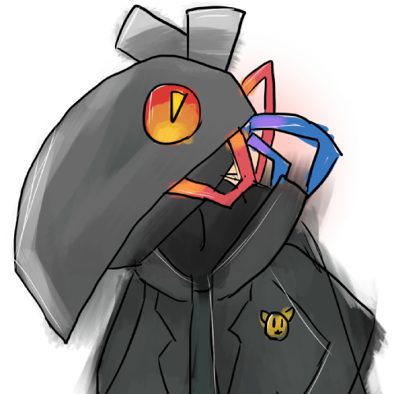
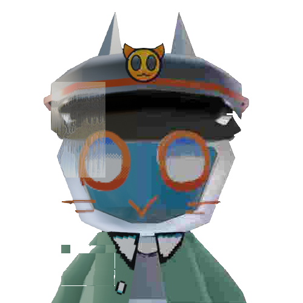
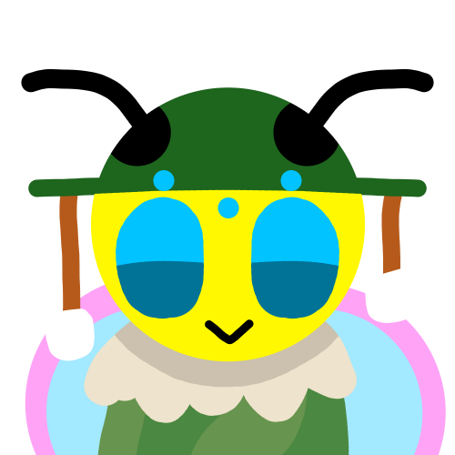
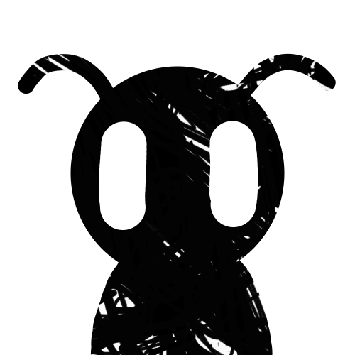

Hello all, Cynthion here!
Greetings internet. In my free time, I enjoy doing many things, from programming and problem-solving to photography and reading. Puzzles are very fun, and I most certainly enjoy learning new things about the world.
As an avid nature enthusiast, I find it very relaxing to go outdoors, as well as a good place to collect inspiration and foster new ideas.
A lot of my free time has been devoted to my game called BeeTD. I make all of the assets myself. This includes taking photos to use in-game, recording all of the sounds with my microphone, drawing all of the sprites, and programming all the bugs. It's a lot of work, which I enjoy very much, and it's very rewarding to see the progress you make over time.
Most of my programming experience is with Haskell, Rust, C and Python. I find functional programming a fun exercise for programming problems of the likes you would find on Project-Euler. I like making small tools and libraries in C and Rust to help automate lots of tasks to help me with my Physics course, as I dislike repetitive tasks, and if I feel I can automate something, I will!
My favourite activities to do aside from working on my game are finding interesting books to read. Recently, I have found myself reading some classical literature and some books about number theory. Music is also a favourite of mine, which is good because I like to try and figure out why I like the music I do, so I can improve the music in my game. And of course, I also like to play some video games. How are you supposed to make a game without having played any?
Last but not least, I also make a lot of art! I love making things! find art and drawing relaxing, and I often find myself coming up with things to make in between activities, like while eating and while walking from place to place.
Well... That's all I have for today! Now go and enjoy the rest of the time you have.